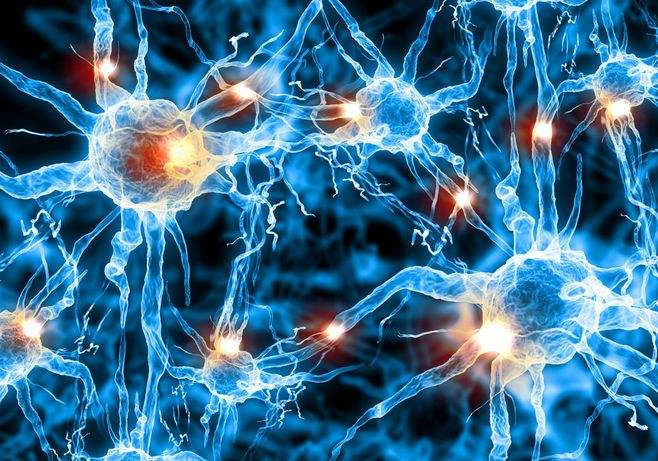
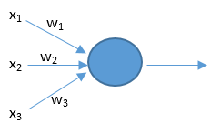
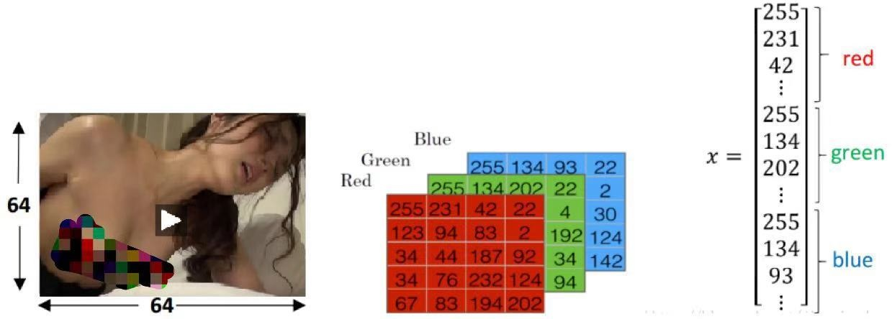
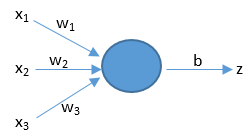
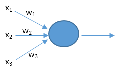
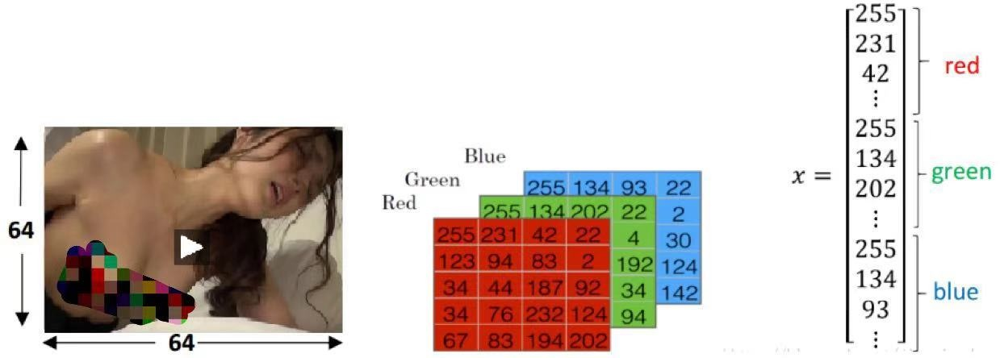
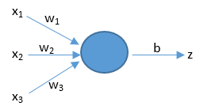

1.1.1 什么是神经网络
什么是人工智能？通俗来讲，就是让机器能像人一样思考。这个无需解释太多，因为通过各种科幻电影我
们已经对人工智能很熟悉了。大家现在感兴趣的应该是——如何实现人工智能？
从1956年夏季首次提出“人工智能”这一术语开始，科学家们尝试了各种方法来实现它。这些方法包括专家
系统 ，决策树、归纳逻辑、聚类等等，但这些都是假智能。直到人工神经网络技术的出现，才让机器拥有了“真
智能”。
为什么说之前的方法都是假智能呢？因为我们人类能清清楚楚地知道它们内部的分析过程，它们只是一个大
型的复杂的程序而已；而人工神经网络则不同，它的内部是一个黑盒子，就像我们人类的大脑一样，我们不知道
它内部的分析过程，我们不知道它是如何识别出人脸的，也不知道它是如何打败围棋世界冠军的。我们只是 为它
构造了一个躯壳而已，就像人类一样，我们只是生出了一个小孩而已，他脑子里是如何想的我们并不知道 ！这就
是人工智能的可怕之处，因为将来它有可能会觉得我们人类不应该活在这个世界上，而把我们消灭掉； 为此，世
界上已经成立了不少安全协会来防范人工智能。
人工神经网络是受到人类大脑结构的启发而创造出来的，这也是它能拥有真智能的根本原因。在我们的大脑
中，有数十亿个称为神经元的细胞，它们连接成了一个神经网络。

人工神经网络正是模仿了上面的网络结构。下面是一个人工神经网络的构造图。每一个圆代表着一个神经元，
他们连接起来构成了一个网络。
人类大脑神经元细胞的树突接收来自外部的多个强度不同的刺激，并在神经元细胞体内进行处理，然后将其
转化为一个输出结果。如下图所示。
 人工神经元也有相似的工作原理。如下图所示

上面的x是神经元的输入，相当于树突接收的多个外部刺激。w是每个输入对应的权重，它影响着每个输入x
的刺激强度。
大脑的结构越简单，那么智商就越低。单细胞生物是智商最低的了。人工神经网络也是一样的，网络越复杂
它就越强大，所以我们需要深度神经网络。这里的深度是指层数多，层数越多那么构造的神经网络就越复杂。
训练深度神经网络的过程就叫做深度学习。网络构建好了后，我们只需要负责不停地将训练数据输入到神经
网络中，它内部就会自己不停地发生变化不停地学习。打比方说我们想要训练一个深度神经网络来识别猫。我们
只需要不停地将猫的图片输入到神经网络中去。训练成功后，我们任意拿来一张新的图片，它都能判断出里面是
否有猫。但我们并不知道他的分析过程是怎样的，它是如何判断里面是否有猫的。就像当我们教小孩子认识猫时，
我们拿来一些白猫，告诉他这是猫，拿来一些黑猫，告诉他这也是猫，他脑子里会自己不停地学习猫的特征。最
后我们拿来一些花猫，问他，他会告诉你这也是猫。但他是怎么知道的？他脑子里的分析过程是怎么样的？我们
无从知道~~
通过对本篇文章的学习，我们知道了通过人工神经网络可以实现真正的人工智能。下一小节我就详细地为大
家讲解神经网络。
1.2.1 如何将数据输入到神经网络中
通过对前面文章的学习，我们已经知道神经网络可以实现真正的人工智能。本小节我会进行详细地讲解，让大家彻底地弄懂神经网络。在仅仅只学完一篇文章后，你肯定依然感觉朦胧，这是正常的，因为不可能用一篇文章就把神经网络给讲清楚了。当你学完本小节所有文章后，你就会感觉豁然开朗了。
我们需要弄懂的第一步就是如何将数据输入到神经网络中。例如，在语音识别、人脸识别这些应用中，是如何将语音、人脸输入到神经网络中的？
下面我拿识别女优的例子来给大家介绍如何将女优的图片数据输入到神经网络中。

此例中，待输入的数据是一张图像。为了存储图像，计算机要存储三个独立的矩阵（矩阵可以理解成二维数组，后面的教程会给大家详细讲解），这三个矩阵分别与此图像的红色、绿色和蓝色相对应（世界上的所有颜色都可以通过红绿蓝三种颜色调配出来）。如果图像的大小是64 * 64个像素（一个像素就是一个颜色点，一个颜色点由红绿蓝三个值来表示，例如，红绿蓝为255,255,255，那么这个颜色点就是白色），所以3个64 * 64大小的矩阵在计算机中就代表了这张图像，矩阵里面的数值就对应于图像的红绿蓝强度值。上图中只画了个5 * 4的矩阵，而不是64 * 64，为什么呢？因为没有必要，搞复杂了反而不易于理解。
为了更加方便后面的处理，我们一般把上面那3个矩阵转化成1个向量x（向量可以理解成1 * n或n * 1的数组，前者为行向量，后者为列向量，向量也会在后面的文章专门讲解）。那么这个向量x的总维数就是64 * 64 * 3，结果是12288。在人工智能领域中，每一个输入到神经网络的数据都被叫做一个特征，那么上面的这张图像中就有12288个特征。这个12288维的向量也被叫做特征向量。神经网络接收这个特征向量x作为输入，并进行预测，然后给出相应的结果。
对于不同的应用，需要识别的对象不同，有些是语音有些是图像有些是传感器数据，但是它们在计算机中都有对应的数字表示形式，通常我们会把它们转化成一个特征向量，然后将其输入到神经网络中。
本篇文章我们已经知道了数据是如何被输入到神经网络中的。那么神经网络是如何根据这些数据进行预测的呢？我们将一张图片输入到神经网络中，神经网络是如何预测这张图中是AV女优的呢？下篇文章我将给大家揭晓。
1.2.2 神经网络是如何进行预测的
上一篇文章中我们已经知道了如何将数据输入到神经网络中。那么神经网络是如何根据这些数据进行预测的呢？我们将一张图片输入到神经网络中，神经网络是如何预测这张图中是否有猫的呢？？
这个预测的过程其实只是基于一个简单的公式：z = dot(w,x) + b。看到这个公式，完全不懂~~不少同学可能被吓得小鸡鸡都萎缩了一截。不用怕，看完我下面的解说后，你就会觉得其实它的原理很简单。就像玻璃栈道一样，只是看起来可怕而已。
上面公式中的x代表着输入特征向量，假设只有3个特征，那么x就可以用（x1，x2，x3）来表示。如下图所示。w表示权重，它对应于每个输入特征，代表了每个特征的重要程度。b表示阈值[yù zhí]，用来影响预测结果。z就是预测结果。公式中的dot()函数表示将w和x进行向量相乘。（不用怕，在后面的文章《向量化》中我会用很通俗易懂的语言来给大家介绍向量相乘有关的高等数学知识）。我们现在只需要知道上面的公式展开后就变成了z = (x1 * w1 + x2 * w2 + x3 * w3) + b。

那么神经网络到底是如何利用这个公式来进行预测的呢？下面我通过一个实例来帮助大家理解。
假设周末即将到来，你听说在你的城市将会有一个音乐节。我们要预测你是否会决定去参加。音乐节离地铁挺远，而且你女朋友想让你陪她宅在家里搞事情，但是天气预报说音乐节那天天气特别好。也就是说有3个因素会影响你的决定，这3个因素就可以看作是3个输入特征。那你到底会不会去呢？你的个人喜好——你对上面3个因素的重视程度——会影响你的决定。这3个重视程度就是3个权重。
如果你觉得地铁远近无所谓，并且已经精力衰竭不太想搞事情了，而且你很喜欢蓝天白云，那么我们将预测你会去音乐节。这个预测过程可以用我们的公式来表示。我们假设结果z大于0的话就表示会去，小于0表示不去。又设阈值b是-5。又设3个特征(x1,x2,x3)为(0,0,1)，最后一个是1，它代表了好天气。又设三个权重(w1,w2,w3)是(2,2,7)，最后一个是7表示你很喜欢好天气。那么就有z = (x1 * w1 + x2 * w2 + x3 * w3) + b = (0 * 2 + 0 * 2 + 1 * 7) + (-5) = 2。预测结果z是2，2大于0，所以预测你会去音乐节。
如果你最近欲火焚身，并且对其它两个因素并不在意，那么我们预测你将不会去音乐节。这同样可以用我们的公式来表示。设三个权重(w1,w2,w3)是(2,7,2)，w2是7表示你有顶穿钢板的欲火。那么就有z = (x1 * w1 + x2 * w2 + x3 * w3) + b = (0 * 2 + 0 * 7 + 1 * 2) + (-5) = -3。预测结果z是-3，-3小于0，所以预测你不会去，会呆在家里搞事情。
预测图片里有没有猫也是通过上面的公式。经过训练的神经网络会得到一组与猫相关的权重。当我们把一张图片输入到神经网络中，图片数据会与这组权重以及阈值进行运算，结果大于0就是有猫，小于0就是没有猫。
你平时上网时有没有发现网页上的广告都与你之前浏览过的东西是有关联的？那是因为很多网站都会记录下你平时的浏览喜好，然后把它们作为权重套入到上面的公式来预测你会购买什么。如果你发现你朋友电脑手机上的网页里面老是出现一些情趣用品或SM道具的广告，那你朋友肯定是个性情中人。
上面那个用于预测的公式我们业界称之为逻辑回归，这个名字有点奇怪，大家记住就行了，只是个名字而已。
最后再稍微提一下激活函数。在实际的神经网络中，我们不能直接用逻辑回归。必须要在逻辑回归外面再套上一个函数。这个函数我们就称它为激活函数。激活函数非常非常重要，如果没有它，那么神经网络的智商永远高不起来。而且激活函数又分好多种。后面我会花好几篇文章来给大家介绍激活函数。在本篇文章的末尾，我只给大家简单介绍一种叫做sigmoid的激活函数。它的公式和图像如下。
我们在这里先只介绍它的一个用途——把z映射到[0,1]之间。上图中的横坐标是z，纵坐标我们用y’来表示，y’就代表了我们最终的预测结果。从图像可以看出，z越大那么y’就越靠近1，z越小那么y’就越靠近0。那为什么要把预测结果映射到[0,1]之间呢？因为这样不仅便于神经网络进行计算，也便于我们人类进行理解。例如在预测是否有猫的例子中，如果y’是0.8，就说明有80%的概率是有猫的。
激活函数就只介绍这些，后面的文章再详细介绍它。有些同学可能会不乐意，要求我多说一些，其实我也想口若悬河地扒拉扒拉说一大堆，因为把一件简单的事给说复杂了是很容易的，而要把一件复杂的事给说简单了是非常非常难的。每篇文章我都是改了又改，删了又删，目的就是让它尽可能的通俗易懂。说多了反而让你们变得晕头转向。例如其实在逻辑回归公式中，w其实应该写成w.T，因为实际运算中我们需要w的转置矩阵。你是不是有点晕头转向了~~我在教程前面的文章里通常会省略掉一些细节，因为那些细节较难，而且他们对于大家理解最重要的理论部分又没有帮助；在后面的文章，我会慢慢地把他们给介绍出来，让你们循序渐进，快乐地在不知不觉中学会人工智能这一尖端的高科技。
在本篇文章中，我们知道了神经网络是如何进行预测的。那么它又是如何判断自己是否预测正确了的呢？如果发现自己预测错误了，他又是如何从错误中进行学习，使自己越来越聪明的呢？后面的文章我将给大家揭晓！
人工神经元也有相似的工作原理。如下图所示

上面的x是神经元的输入，相当于树突接收的多个外部刺激。w是每个输入对应的权重，它影响着每个输入x
的刺激强度。
大脑的结构越简单，那么智商就越低。单细胞生物是智商最低的了。人工神经网络也是一样的，网络越复杂
它就越强大，所以我们需要深度神经网络。这里的深度是指层数多，层数越多那么构造的神经网络就越复杂。
训练深度神经网络的过程就叫做深度学习。网络构建好了后，我们只需要负责不停地将训练数据输入到神经
网络中，它内部就会自己不停地发生变化不停地学习。打比方说我们想要训练一个深度神经网络来识别猫。我们
只需要不停地将猫的图片输入到神经网络中去。训练成功后，我们任意拿来一张新的图片，它都能判断出里面是
否有猫。但我们并不知道他的分析过程是怎样的，它是如何判断里面是否有猫的。就像当我们教小孩子认识猫时，
我们拿来一些白猫，告诉他这是猫，拿来一些黑猫，告诉他这也是猫，他脑子里会自己不停地学习猫的特征。最
后我们拿来一些花猫，问他，他会告诉你这也是猫。但他是怎么知道的？他脑子里的分析过程是怎么样的？我们
无从知道~~
通过对本篇文章的学习，我们知道了通过人工神经网络可以实现真正的人工智能。下一小节我就详细地为大
家讲解神经网络。
1.2.1 如何将数据输入到神经网络中
通过对前面文章的学习，我们已经知道神经网络可以实现真正的人工智能。本小节我会进行详细地讲解，让大家彻底地弄懂神经网络。在仅仅只学完一篇文章后，你肯定依然感觉朦胧，这是正常的，因为不可能用一篇文章就把神经网络给讲清楚了。当你学完本小节所有文章后，你就会感觉豁然开朗了。
我们需要弄懂的第一步就是如何将数据输入到神经网络中。例如，在语音识别、人脸识别这些应用中，是如何将语音、人脸输入到神经网络中的？
下面我拿识别女优的例子来给大家介绍如何将女优的图片数据输入到神经网络中。

此例中，待输入的数据是一张图像。为了存储图像，计算机要存储三个独立的矩阵（矩阵可以理解成二维数组，后面的教程会给大家详细讲解），这三个矩阵分别与此图像的红色、绿色和蓝色相对应（世界上的所有颜色都可以通过红绿蓝三种颜色调配出来）。如果图像的大小是64 * 64个像素（一个像素就是一个颜色点，一个颜色点由红绿蓝三个值来表示，例如，红绿蓝为255,255,255，那么这个颜色点就是白色），所以3个64 * 64大小的矩阵在计算机中就代表了这张图像，矩阵里面的数值就对应于图像的红绿蓝强度值。上图中只画了个5 * 4的矩阵，而不是64 * 64，为什么呢？因为没有必要，搞复杂了反而不易于理解。
为了更加方便后面的处理，我们一般把上面那3个矩阵转化成1个向量x（向量可以理解成1 * n或n * 1的数组，前者为行向量，后者为列向量，向量也会在后面的文章专门讲解）。那么这个向量x的总维数就是64 * 64 * 3，结果是12288。在人工智能领域中，每一个输入到神经网络的数据都被叫做一个特征，那么上面的这张图像中就有12288个特征。这个12288维的向量也被叫做特征向量。神经网络接收这个特征向量x作为输入，并进行预测，然后给出相应的结果。
对于不同的应用，需要识别的对象不同，有些是语音有些是图像有些是传感器数据，但是它们在计算机中都有对应的数字表示形式，通常我们会把它们转化成一个特征向量，然后将其输入到神经网络中。
本篇文章我们已经知道了数据是如何被输入到神经网络中的。那么神经网络是如何根据这些数据进行预测的呢？我们将一张图片输入到神经网络中，神经网络是如何预测这张图中是AV女优的呢？下篇文章我将给大家揭晓。
1.2.2 神经网络是如何进行预测的
上一篇文章中我们已经知道了如何将数据输入到神经网络中。那么神经网络是如何根据这些数据进行预测的呢？我们将一张图片输入到神经网络中，神经网络是如何预测这张图中是否有猫的呢？？
这个预测的过程其实只是基于一个简单的公式：z = dot(w,x) + b。看到这个公式，完全不懂~~不少同学可能被吓得小鸡鸡都萎缩了一截。不用怕，看完我下面的解说后，你就会觉得其实它的原理很简单。就像玻璃栈道一样，只是看起来可怕而已。
上面公式中的x代表着输入特征向量，假设只有3个特征，那么x就可以用（x1，x2，x3）来表示。如下图所示。w表示权重，它对应于每个输入特征，代表了每个特征的重要程度。b表示阈值[yù zhí]，用来影响预测结果。z就是预测结果。公式中的dot()函数表示将w和x进行向量相乘。（不用怕，在后面的文章《向量化》中我会用很通俗易懂的语言来给大家介绍向量相乘有关的高等数学知识）。我们现在只需要知道上面的公式展开后就变成了z = (x1 * w1 + x2 * w2 + x3 * w3) + b。

那么神经网络到底是如何利用这个公式来进行预测的呢？下面我通过一个实例来帮助大家理解。
假设周末即将到来，你听说在你的城市将会有一个音乐节。我们要预测你是否会决定去参加。音乐节离地铁挺远，而且你女朋友想让你陪她宅在家里搞事情，但是天气预报说音乐节那天天气特别好。也就是说有3个因素会影响你的决定，这3个因素就可以看作是3个输入特征。那你到底会不会去呢？你的个人喜好——你对上面3个因素的重视程度——会影响你的决定。这3个重视程度就是3个权重。
如果你觉得地铁远近无所谓，并且已经精力衰竭不太想搞事情了，而且你很喜欢蓝天白云，那么我们将预测你会去音乐节。这个预测过程可以用我们的公式来表示。我们假设结果z大于0的话就表示会去，小于0表示不去。又设阈值b是-5。又设3个特征(x1,x2,x3)为(0,0,1)，最后一个是1，它代表了好天气。又设三个权重(w1,w2,w3)是(2,2,7)，最后一个是7表示你很喜欢好天气。那么就有z = (x1 * w1 + x2 * w2 + x3 * w3) + b = (0 * 2 + 0 * 2 + 1 * 7) + (-5) = 2。预测结果z是2，2大于0，所以预测你会去音乐节。
如果你最近欲火焚身，并且对其它两个因素并不在意，那么我们预测你将不会去音乐节。这同样可以用我们的公式来表示。设三个权重(w1,w2,w3)是(2,7,2)，w2是7表示你有顶穿钢板的欲火。那么就有z = (x1 * w1 + x2 * w2 + x3 * w3) + b = (0 * 2 + 0 * 7 + 1 * 2) + (-5) = -3。预测结果z是-3，-3小于0，所以预测你不会去，会呆在家里搞事情。
预测图片里有没有猫也是通过上面的公式。经过训练的神经网络会得到一组与猫相关的权重。当我们把一张图片输入到神经网络中，图片数据会与这组权重以及阈值进行运算，结果大于0就是有猫，小于0就是没有猫。
你平时上网时有没有发现网页上的广告都与你之前浏览过的东西是有关联的？那是因为很多网站都会记录下你平时的浏览喜好，然后把它们作为权重套入到上面的公式来预测你会购买什么。如果你发现你朋友电脑手机上的网页里面老是出现一些情趣用品或SM道具的广告，那你朋友肯定是个性情中人。
上面那个用于预测的公式我们业界称之为逻辑回归，这个名字有点奇怪，大家记住就行了，只是个名字而已。
最后再稍微提一下激活函数。在实际的神经网络中，我们不能直接用逻辑回归。必须要在逻辑回归外面再套上一个函数。这个函数我们就称它为激活函数。激活函数非常非常重要，如果没有它，那么神经网络的智商永远高不起来。而且激活函数又分好多种。后面我会花好几篇文章来给大家介绍激活函数。在本篇文章的末尾，我只给大家简单介绍一种叫做sigmoid的激活函数。它的公式和图像如下。
我们在这里先只介绍它的一个用途——把z映射到[0,1]之间。上图中的横坐标是z，纵坐标我们用y’来表示，y’就代表了我们最终的预测结果。从图像可以看出，z越大那么y’就越靠近1，z越小那么y’就越靠近0。那为什么要把预测结果映射到[0,1]之间呢？因为这样不仅便于神经网络进行计算，也便于我们人类进行理解。例如在预测是否有猫的例子中，如果y’是0.8，就说明有80%的概率是有猫的。
激活函数就只介绍这些，后面的文章再详细介绍它。有些同学可能会不乐意，要求我多说一些，其实我也想口若悬河地扒拉扒拉说一大堆，因为把一件简单的事给说复杂了是很容易的，而要把一件复杂的事给说简单了是非常非常难的。每篇文章我都是改了又改，删了又删，目的就是让它尽可能的通俗易懂。说多了反而让你们变得晕头转向。例如其实在逻辑回归公式中，w其实应该写成w.T，因为实际运算中我们需要w的转置矩阵。你是不是有点晕头转向了~~我在教程前面的文章里通常会省略掉一些细节，因为那些细节较难，而且他们对于大家理解最重要的理论部分又没有帮助；在后面的文章，我会慢慢地把他们给介绍出来，让你们循序渐进，快乐地在不知不觉中学会人工智能这一尖端的高科技。
在本篇文章中，我们知道了神经网络是如何进行预测的。那么它又是如何判断自己是否预测正确了的呢？如果发现自己预测错误了，他又是如何从错误中进行学习，使自己越来越聪明的呢？后面的文章我将给大家揭晓！